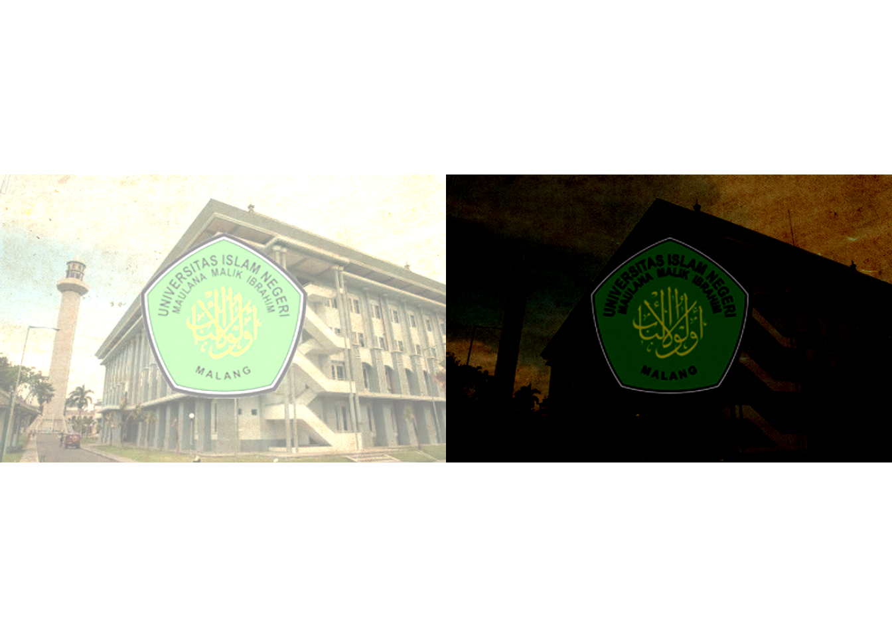
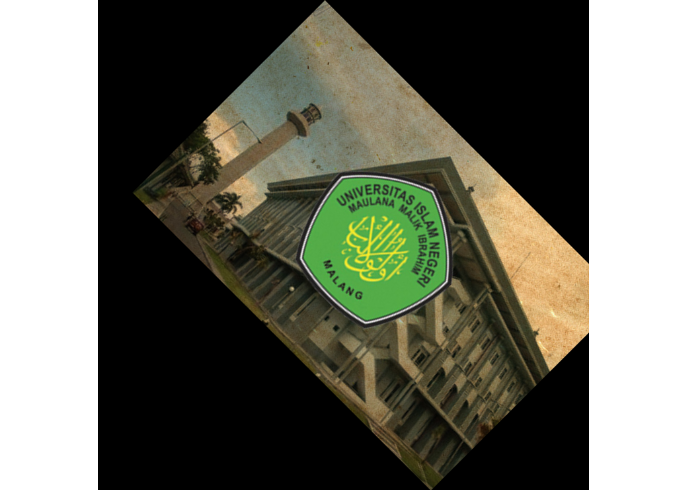

Tutorial EBImage
Muhammad Haris Ibrahim | Dosen Pembimbing: Prof. Dr. Suhartono, M. Kom | Universitas Islam Negeri Maulana Malik Ibrahim Malang
3/21/2021
Berikut adalah tutorial mengenai Image Processing menguunakan package EBImage
1. Installasi Package EBImage
Langkah pertama adalah menginstall package EBImage pada RStudio.
if (!requireNamespace("BiocManager", quietly = TRUE))
install.packages("BiocManager")
BiocManager::install("EBImage")## Bioconductor version 3.12 (BiocManager 1.30.10), R 4.0.2 (2020-06-22)## Installing package(s) 'EBImage'## package 'EBImage' successfully unpacked and MD5 sums checked
##
## The downloaded binary packages are in
## C:\Users\ASUS PC\AppData\Local\Temp\RtmpaSXQ9M\downloaded_packages## Installation path not writeable, unable to update packages: boot, class,
## cluster, codetools, foreign, KernSmooth, MASS, mgcv, nlme, nnet, spatial## Old packages: 'BiocManager', 'Matrix', 'RCurl', 'survival', 'xfun'2. Menentukan Lokasi Kerja
Kemudaian menentukan lokasi kerja dimana lokasi ini merupakan lokasi dari gambar yang akan digunakan. setelah itu memanggil Packgage EBImage menggunakan peritah library.
#set lokasi kerja
setwd("E:/file desktop/Perkuliahan/Perkuliahan Semester 2/Linear Algebra/Ebimage")
#panggil Package
library(EBImage)## Warning: package 'EBImage' was built under R version 4.0.33. Import Foto
Untuk membaca gambar, menggunakan perintah readImage() dan memasukkan lokasi serta nama gambar. Perintah tersebut sudah ada pada package EBImage. Kemudian untuk menampilkan image menggunakan perintah display(Image).
# Reading Image
Image<- readImage('UIN Tes.JPG')
display(Image)4. Gambaran Image
Untuk melihat gambaran dari image kita, bisa menggunakan code baris ke-26 yaitu print(image). Pada properties image Ini akan menampilkan sifat gambar, meliputi serangkaian nilai-nilai piksel. Dengan informasi ini, kita bisa menerapkan operasi matematika dan statistik untuk melakukan peningkatan pada gambar.
print(Image)## Image
## colorMode : Color
## storage.mode : double
## dim : 620 400 3
## frames.total : 3
## frames.render: 1
##
## imageData(object)[1:5,1:6,1]
## [,1] [,2] [,3] [,4] [,5] [,6]
## [1,] 0.5176471 0.5254902 0.5843137 0.5333333 0.4980392 0.4941176
## [2,] 0.5215686 0.5098039 0.5450980 0.5215686 0.5137255 0.5137255
## [3,] 0.5411765 0.5333333 0.5411765 0.5058824 0.4980392 0.5254902
## [4,] 0.5411765 0.5333333 0.5215686 0.5176471 0.5294118 0.5333333
## [5,] 0.5843137 0.5529412 0.5450980 0.5882353 0.5843137 0.52549025. Menyesuaikan Kecerahan
Kemudian, Kita coba untuk memanipulasi kecerahan gambar menggunakan tanda + dan - pada intensitas/kecerahan.
Pada gambar sebelah kiri merupakan gambar dengan intensitas yang ditambah sebesar 0.5, dan gambar di sebelah kanan merupakan gambar dengan intensitas yang dikurangi sebesar 0,5
#Brightness
Image1<- Image + 0.5
Image2<- Image - 0.5
par(mfrow= c(1,2))
plot(Image1)
plot(Image2)
6. Menyesuaikan Kontras
Selanjutnya adalah memanipulasi kontras. Manipulasi kontras dapat dilakukan dengan perkalian berbeda kecerahan menggunakan tanda *
Gambar sebelah kiri merupakan gambar yang dikalikan dengan 1, dan gambar sebelah kanan merupakan gambar yang dikalikan dengan 1,5
#Adjusting Contrast
Image3 <- Image * 1
Image4 <- Image * 1.5
par(mfrow= c(1,2))
plot(Image3)
plot(Image4)7. Koreksi Gamma
percobaan selanjutnya adalah koreksi gamma. pada koreksi gamma, menggunakan tanda ^.
pada gambar kiri menggunakan 1,7 dan gambar kanan menggunakan 0,7.
#Gamma Correction
Image5<-Image ^ 1.7
Image6<-Image ^ 0.7
par(mfrow=c(1,2))
plot(Image5)
plot(Image6)8. Cropping
Pada cropping kita akan memotong array dari pixel gambar, karena rentang gambar yang saya gunakan yaitu 620x400, jadi tidak boleh memotong lebih dari itu. Sehingga diperoleh output berikut
#cropping
display(Image[50:550, 50:350,])9. Transformasi Spasial
Kita bisa menggunakan rotate, translate flip yang telah disediakan oleh EBImage. Dari code diatas didapatkan output seperti dibawah ini.
#Spatial Transformation
Imagetr <- translate(rotate(Image,45), c(50,0))
display (Imagetr)
10. Manajemen Warna
Karena array piksel memiliki tiga sumbu di dimensi, misalnya dalam kasus saya adalah 620 x 400 x 3. Sumbu ketiga adalah slot untuk tiga saluran: merah, hijau dan biru. atau lita juga dapat ,elihat gambaran dari gambar setelah dijadikan grayscale.
#Color Management
colorMode(Image)<-Grayscale
display(Image)## Only the first frame of the image stack is displayed.
## To display all frames use 'all = TRUE'.print(Image)## Image
## colorMode : Grayscale
## storage.mode : double
## dim : 620 400 3
## frames.total : 3
## frames.render: 3
##
## imageData(object)[1:5,1:6,1]
## [,1] [,2] [,3] [,4] [,5] [,6]
## [1,] 0.5176471 0.5254902 0.5843137 0.5333333 0.4980392 0.4941176
## [2,] 0.5215686 0.5098039 0.5450980 0.5215686 0.5137255 0.5137255
## [3,] 0.5411765 0.5333333 0.5411765 0.5058824 0.4980392 0.5254902
## [4,] 0.5411765 0.5333333 0.5215686 0.5176471 0.5294118 0.5333333
## [5,] 0.5843137 0.5529412 0.5450980 0.5882353 0.5843137 0.5254902colorMode(Image)<-Color
display(Image)11. Filtering
Dalam bagian ini, kita akan melakukan smoothing/mengaburkan menggunakan low-pass filter, dan menggunakan high-pass filter. Selain itu, kita juga akan menyelidiki median filter untuk menghilangkan noise.
#filtering
fLow<- makeBrush(21, shape='disc', step=FALSE)^2Menggunakan Low-pass.
fLow<-fLow/sum(fLow)
Image.fLow<-filter2(Image,fLow)sehingga didapatkan hasil seperti berikut
display(Image.fLow)Selanjutnya, menggunakan filter High-pass.
fHigh <- matrix(1,nc = 3, nr=3)
fHigh[2,2]<- -8
Image.fHigh <- filter2(Image,fHigh)sehingga mendapatkan hasil seperti berikut
display(Image.fHigh)Kemudian, coba untuk menghilangkan noise pada gambar menggunakan medianFilter
Image<-readImage("UIN Tes.JPG")
medFltr<-medianFilter(Image,1.1)dapat kita lihat perbandingannya seperti berikut
display(medFltr)
Mungkin sampai sini dulu tutorial kita kali ini, mohon maaf apabila kurangnya.